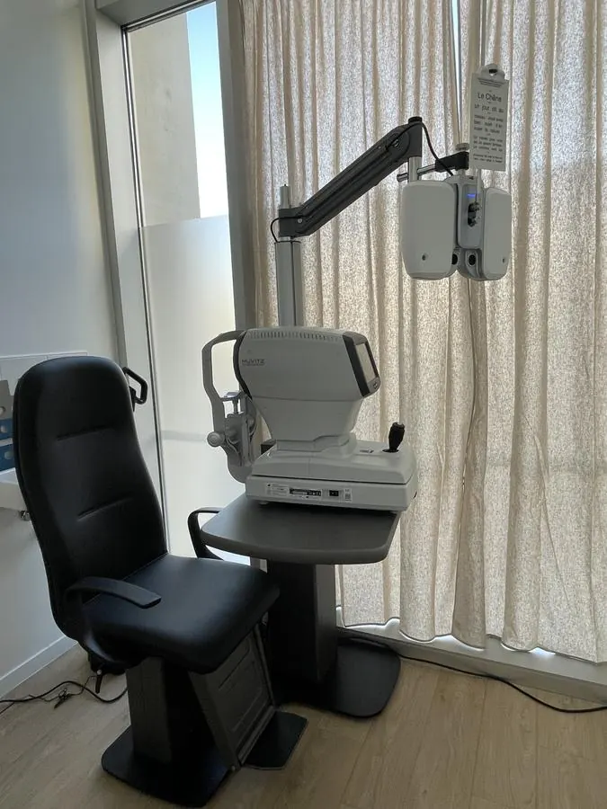
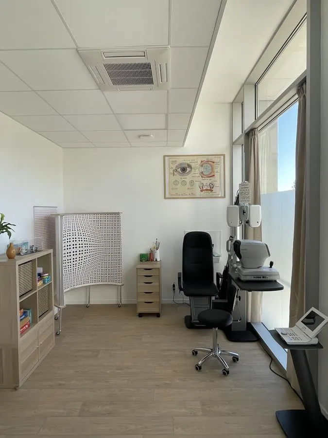

Le cabinet et l'orthoptiste
Un cabinet équipé pour tous les âges, du dépistage du nourrisson à la réadaptation de l'adulte.
Situé au sein de l'Espace de Santé Saouzelong Canal, le cabinet d'orthoptie assure une prise en charge individuelle et coordonnée, adaptée à tous les âges, du nourrisson à la personne âgée.
Les consultations couvrent les principaux domaines de l'orthoptie : dépistage visuel du bébé et de l'enfant, vision binoculaire, troubles du neurodéveloppement et des apprentissages (trouble spécifique des apprentissages, TDAH…), trouble du spectre de l'autisme, troubles neurovisuels acquis après une atteinte cérébrale, rééducation visuo-vestibulaire (vertiges, dépendance visuelle), basse vision, ainsi que la primo-prescription et le renouvellement de correction optique.
L'Espace de Santé réunit également des médecins généralistes, orthophonistes, psychomotriciens, kinésithérapeutes, ostéopathes et infirmiers. Lorsque c'est utile, notamment pour un patient qui n'a pas encore d'autre suivi, cette proximité facilite une prise en charge pluridisciplinaire coordonnée.
L'orthoptiste

Clément Maupomé
Orthoptiste · Espace de Santé Saouzelong Canal, Toulouse · RPPS 10010199379
Formations & diplômes
- Certificat de capacité d'orthoptiste — Université de Toulouse (2022)
- Diplôme d'Université Troubles du Spectre Autistique : actualisation des connaissances et des pratiques professionnelles — Université Toulouse – Jean Jaurès (2026)
- Formation « Autisme et neurovision : la place de l'orthoptiste » (UNRIO)
- Formation « Troubles neurovisuels acquis chez l'adulte – approche pluridisciplinaire » (CADET, 2026)
Le matériel
Un équipement spécifique pour chaque type de bilan et de rééducation.
Réfraction et correction optique
- Autoréfractomètre-kératomètre (ARK)
- Frontofocomètre
- Appareil de réfraction subjective
Dépistage de l'enfant
- Réfractomètre pédiatrique Plusoptix
- Cartes d'acuité BéBé Vision Tropique (regard préférentiel)
Bilan neurovisuel
- Tests normés : TVPS, KOPV, MVPT, DTVP, BEN, EDA
Ainsi que l'ensemble du matériel orthoptique adapté à chaque âge et à chaque bilan.
Le cabinet en images





Besoin d'un bilan ?
Réservation en ligne sur Doctolib, à toute heure.